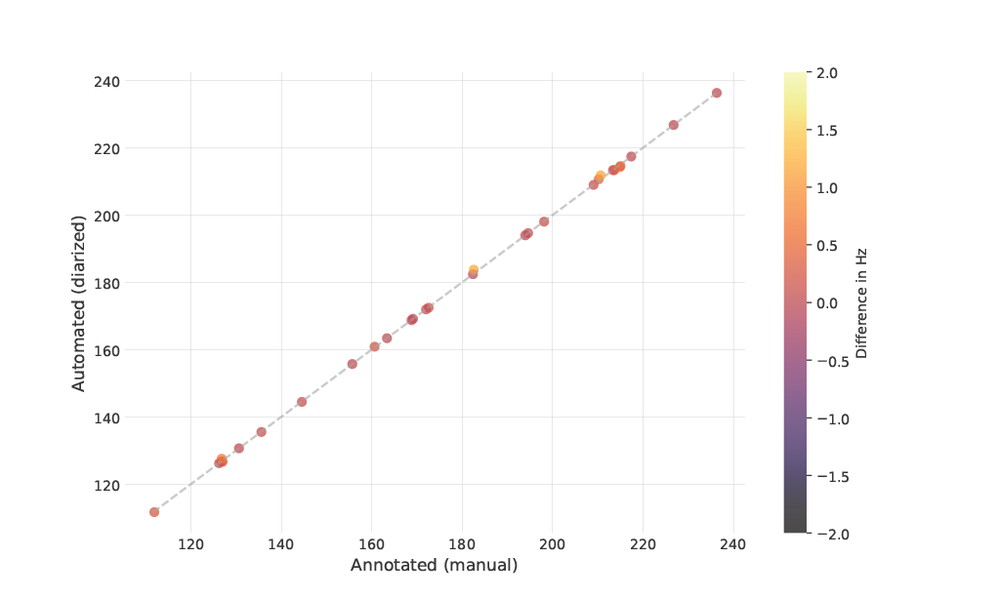
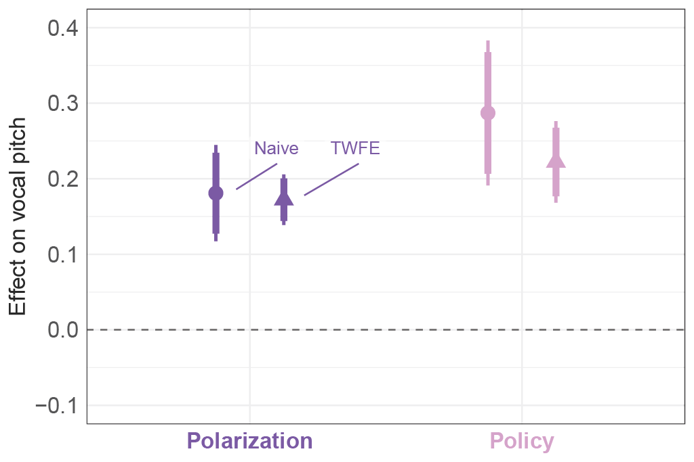
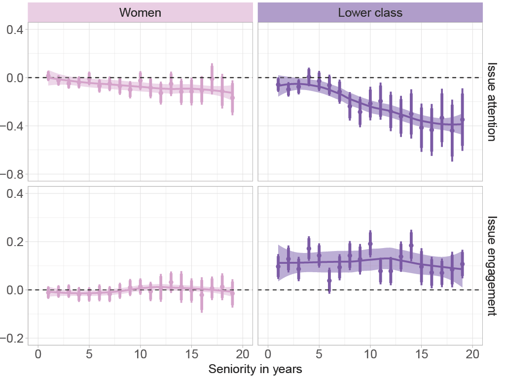
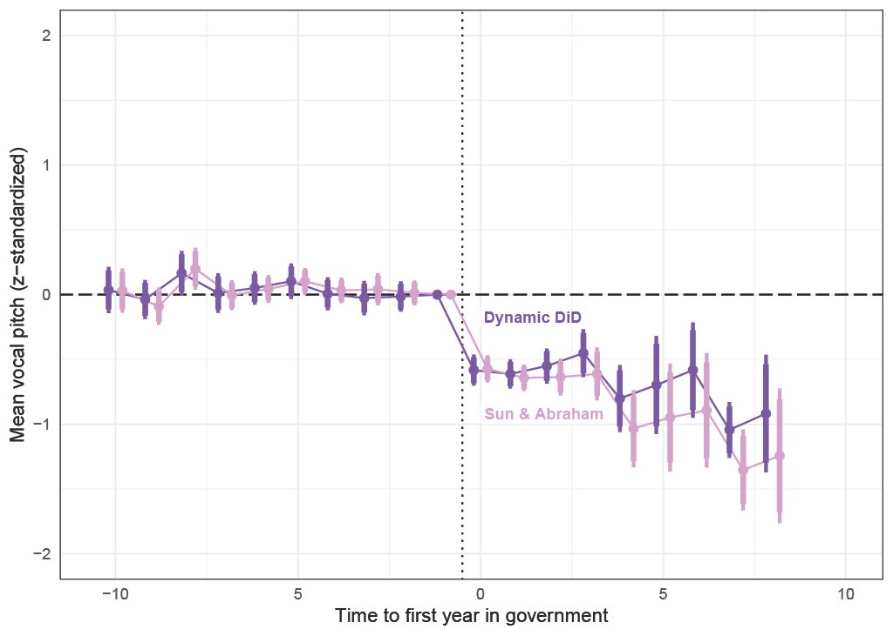

Research
Working Papers
Automated Annotation of Political Speech Recordings

Recent advances in political science have revealed that audio recordings offer a wealth of politically relevant information beyond what can be gleaned from text alone. However, despite the widespread availability of political speech recordings, incorporating audio data into applied research is challenged by incomplete, inaccurate, or even missing annotations. Annotations, such as timestamps marking the start and end of segments and speaker identities, are essential for preprocessing speech audio into distinct units like speeches, utterances, or words, typical units used when studying speech text. In this paper, I develop a deep learning-based annotation pipeline capable of automatically annotating speech recordings with timestamps and speaker identities at the speech level. The pipeline combines speaker diarization, automatic speech recognition, and speaker recognition and requires no prior human-annotated data. This new weakly supervised learning approach for speaker recognition makes it possible to identify speakers without manually compiling reference segments and does not require retraining when new speakers are targeted. I validate the pipeline using recordings from parliamentary debates in the Danish Parliament, demonstrating that the automated annotations are on par with human benchmarks. The pipeline is implemented as open-source Python software, speechannote, for broad accessibility.
Partisan Conflict in Nonverbal Communication
Revised and resubmitted, Political Science Research and Methods
With Frederik Hjorth

In multiparty systems, parties signal conflict through communication, yet standard approaches to measuring partisan conflict in communication consider only the verbal dimension. We expand the study of partisan conflict to the nonverbal dimension by developing a measure of conflict signaling based on variation in a speaker’s expressed emotional arousal, as indicated by changes in vocal pitch. We demonstrate our approach using comprehensive audio data from parliamentary debates in Denmark spanning more than two decades. We find that arousal reflects prevailing patterns of partisan polarization and predicts subsequent legislative behavior. Moreover, we show that, consistent with a strategic model of behavior, arousal tracks the electoral and policy incentives faced by legislators. All results persist when we account for the verbal content of speech. By documenting a novel dimension of elite communication of partisan conflict and providing evidence for the strategic use of nonverbal signals, our findings deepen our understanding of the nature of elite partisan communication.
Committed but Constrained: Explaining Why the Descriptive-to-Substantive Representation Link Weakens Over Time

The core assumption behind affirmative action such as gender quotas is that descriptive representatives prioritize and continue to prioritize the groups they represent, presumably because they are more committed. Although this pattern is broadly supported in both theory and empirics, a recent line of work suggests that the substantive value of descriptive representation might diminish over time, crowding out group-based representation throughout a legislator’s career. However, it remains unclear whether this emerges as a result of declining commitment to represent their groups or changing responsibilities as descriptive representatives become part of the political elite. Using a novel corpus of aligned text-audio data spanning more than two decades of legislative speeches in Denmark, I document two main findings for the political representation of women and lower social classes. First, in line with the existing literature, descriptive representatives, on average, prioritize and commit to representing their groups more than their counterparts do. Second, descriptive representatives deprioritize their groups’ issues as they spend time in parliament, but they remain as engaged when they do raise their groups’ policy issues later as they are at the beginning of their career. This suggests that the diminishing substantive value happens not because of vanishing group commitments but because of changing incentives and constraints that politicians face throughout their careers.
When They Go High, We Go Low: Rhetorical Rewards of Governing

Political power is transmitted not only by what politicians say but also by how they say it. Although government generally faces larger electoral and rhetorical costs compared to the opposition, politicians in governing roles can reap rhetorical rewards. By adjusting their vocal pitch, they can shape perceptions of valued traits like competence, dominance, and composure. I therefore expect politicians in governing roles to speak with a lower pitch than politicians in non-governing roles. Using a multimodal dataset containing text-audio data from more than twenty years of parliamentary speeches in Denmark, I show compelling evidence consistent with this claim. When politicians enter government, they lower their vocal pitch by more than half a standard deviation but revert to their pre-government level when they leave office. This finding holds when functional and accountability constraints are taken into account. The results offer a possible lens to understanding the co-existence of empirical laws of the cost of governing and the incumbency advantage and strengthen our understanding of the general advantages and disadvantages governments face vis-`a-vis oppositions.
Ongoing Projects
Societal Problems and Individual Solutions: Policy Framing and Accountability
Soy un Perdedor: What Happens When Politicians Lose? (w. Roman Senninger and Mathias Wessel Tromborg)